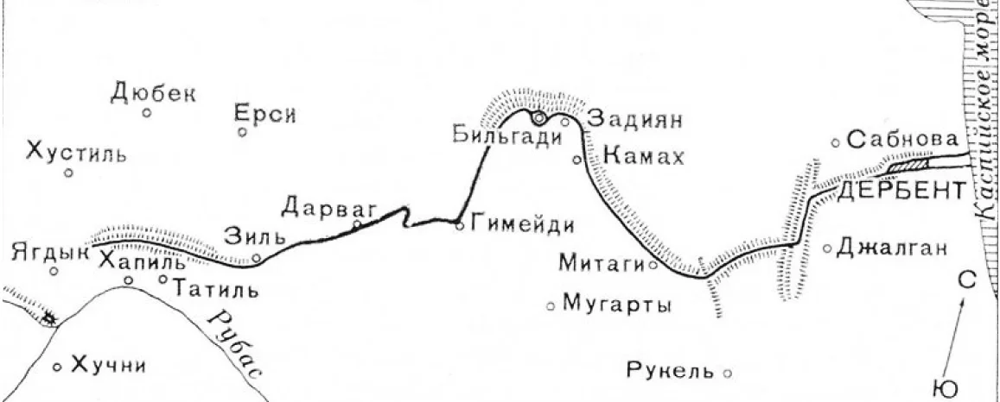
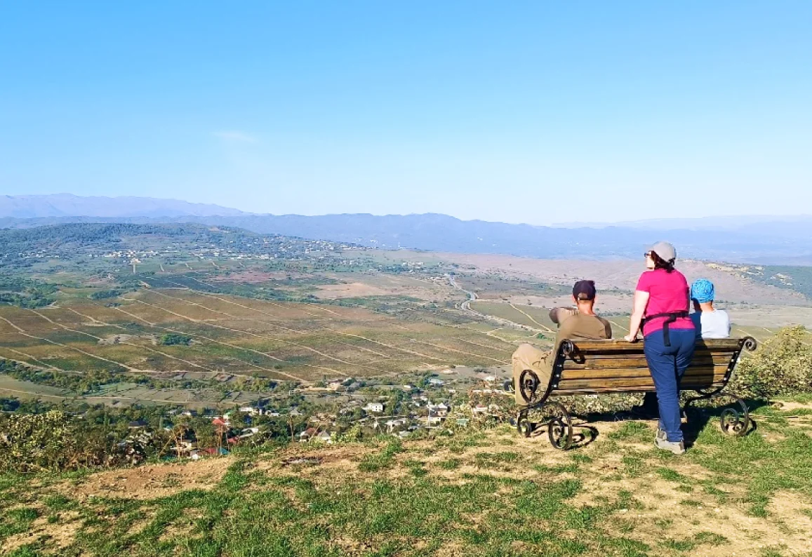
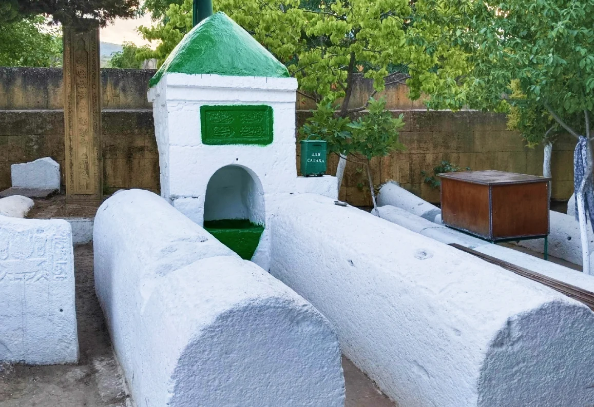

«Каспийские ворота».
Дербент. Эхо веков под ногами путешественников.
В недавнем прошлом Дагестан не был монолитной частью России.
160 лет назад на его территории было множество государств. Во главе каждого стоял Шамхал, Уцмий или Хан.
Названий много- суть одна. А раз есть правитель, то должна быть и столица. Место, куда стекаются налоги, ремесленники приходят торговать, а войны продают свои услуги. И конечно столица будет отличаться от остальных поселений в сторону большого разнообразия архитектуры и богатства.
Первой столицей по праву считается Дербент. У этого города за 5 тысячелетий было много имен. Мне лично нравится «Железные ворота». Современные черты, сохранившиеся до наших дней, город принимает при персах в 6 веке. Это непреступная крепость на холме в самом узком месте между горами Кавказа и Каспийским морем. Параллельные стены уходили в море на 500 метров и запирались огромной цепью. Пространство между стенами и был город Дербент. Но стена шла не только в море. С противоположной стороны, сквозь леса и горы, она тянулась на 42 км. Форты, военные гарнизоны, народы..все перемещалось и создавалось. Ни до ни после этого никто на Кавказе не строил подобных укреплений.
Хронисты писали, что несмотря на постоянную войну Сасанидской Персии и Византии, греки присылали по 200 кг золота в год, только чтобы стройка была закончена. Так от чего пытались отгородиться величайшие империи своего времени? Ведь Дербент не просто какая то крепость. Своими укреплениями он уступал лишь стенам Константинополя. Ответ: - Гунны. А после них все волны степняков времён великого переселения народов. Строительство Даг-бары- Кавказкой стены- было главной стройкой 6 века н.э. В какой то момент персов завоевал Арабский Халифат, неся на кончиках сабель новую религию побежденным. И арабы дали второе дыхание Дербенту и Великой стене. Десятки народов со всего необъятного халифата были переселены сюда. Их прямых потомков, многие из которых до сих пор говорят на своих языках, можно встретить в селениях Джалган, Митаги, Дарваг и Зиль.

Хронисты писали, что несмотря на постоянную войну Сасанидской Персии и Византии, греки присылали по 200 кг золота в год, только чтобы стройка была закончена.
Так от чего пытались отгородиться величайшие империи своего времени? Ведь Дербент не просто какая то крепость. Своими укреплениями он уступал лишь стенам Константинополя.
Ответ: - Гунны. А после них все волны степняков времён великого
переселения народов.
Строительство Даг-бары- Кавказкой стены- было главной стройкой 6
века н.э.
В какой то момент персов завоевал Арабский Халифат, неся на
кончиках сабель новую религию побежденным. И арабы дали второе
дыхание Дербенту и Великой стене. Десятки народов со всего
необъятного халифата были переселены сюда. Их прямых потомков,
многие из которых до сих пор говорят на своих языках, можно
встретить в селениях Джалган, Митаги, Дарваг и Зиль.

Чтобы хорошенько осмотреть Дербент понадобиться несколько дней. Возьмите экскурсию по крепости Нарын-Кала и старым городским магалам. Посетите центральный рынок с его вкусными продуктами. Рядом можно отлично пообедать в одной из маленьких национальных столовых (Дербент кулинарно разнообразен, чем любое другое место в Дагестане).
Проведите вечер в одной из многочисленных чайных (некоторые из них располагаются с прекрасным видом на город и море). Или сходите в местный хамам.
Обязательно посетите местное историческое кладбище- это вполне заменяет поход в художественный музей.
